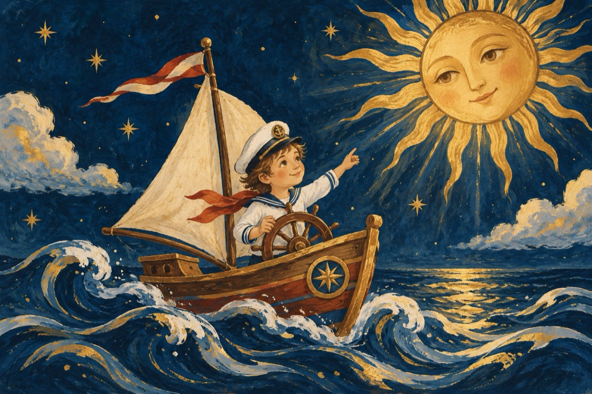

1 Iunie
Este ziua copilului
În fiecare an, la întâi iunie
Copiii mapamondului
Au marea zi, ce lor li se cuvine!
Azi poți să fii un Pardalian
Un Don Quijote, un domn Goe,
Pe un vapor, un mare căpitan
Sau să primești în dar o jucărie!
E ziua ta copile,
E cea mai mare sărbătoare
Azi ai venit în astă lume
E prima zi a ta sub razele de soare!
Bucurați-vă și voi bunică și bunicule
Ce-ați fost și voi copii ca mine
Trecut-au anii, trecut-au zilele
Să fiți copii și vouă azi vi se cuvine!
Astăzi de bună seamă
Mai ales ție ți se cuvine
O dulce mamă, o dulce mamă!
Că m-ai adus în astă lume!
E ziua voastră copii
Ieșiți, zburdați în soare zi de zi
Trăiți în lumea asta ca niște jucării
Luptați cu zmeii, luptați-vă cu viața,
Haideți copii, e ziua voastră oriunde ați fi.
Bună dimineața!
P.S.
-1 Iunie e ziua tuturor
De nu acum cândva am fost cu toții copii.
E și ziua noastră, ziua amintirilor
Și tu copil de astăzi, cum noi și tu vei fi!
Vasile Groza